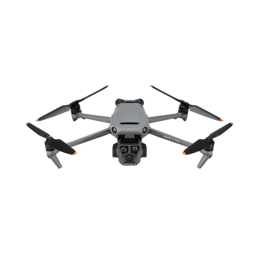
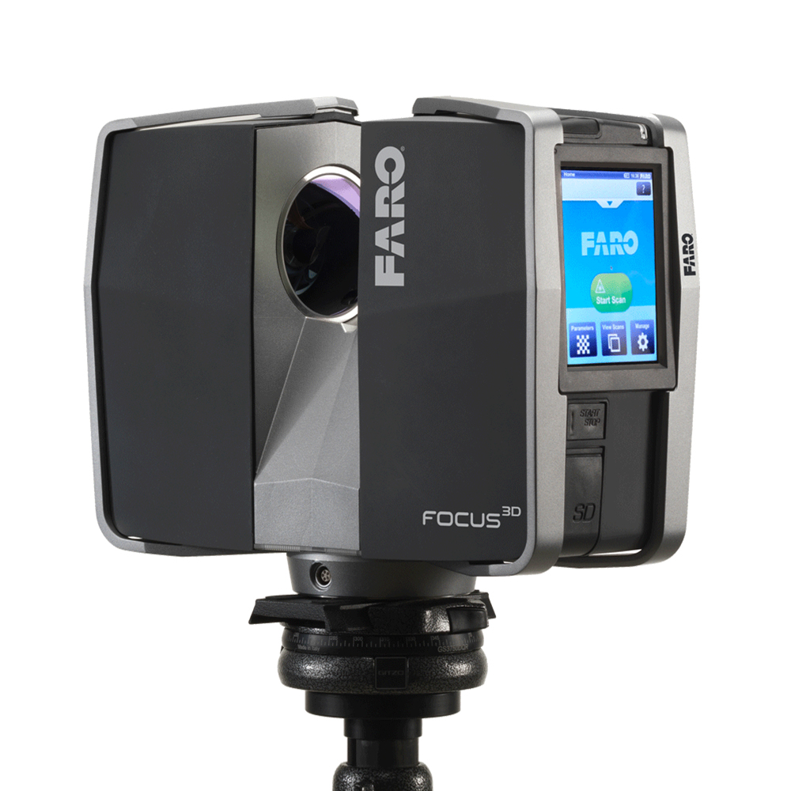
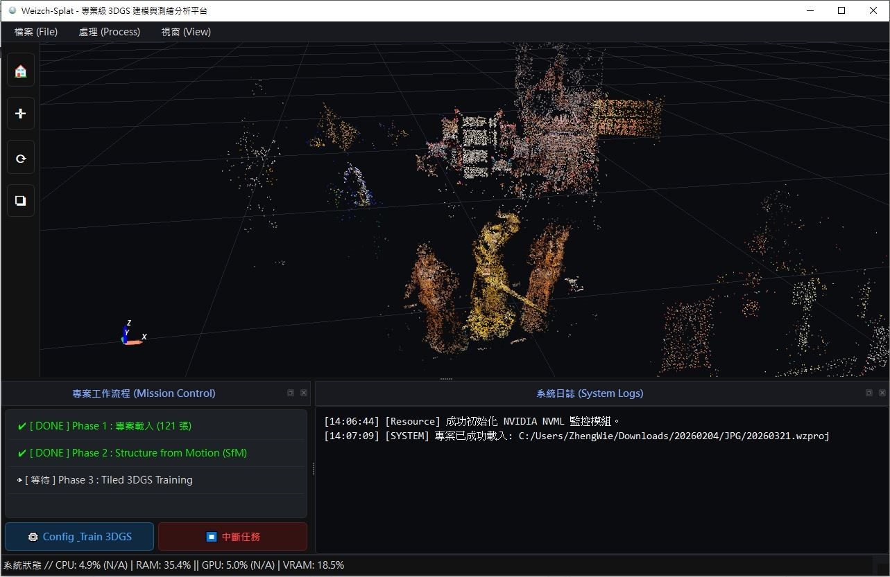
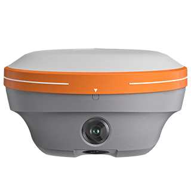
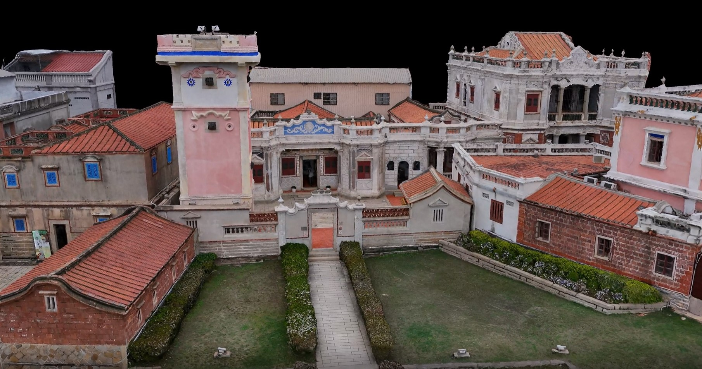
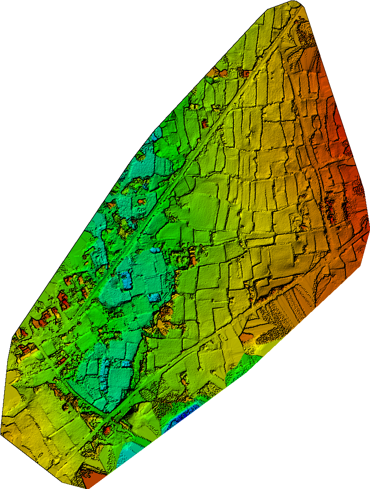

關於公司
Frozen Dimensions Geomatics Center 致力於突破傳統測繪的框架，融合地理資訊系統與尖端運算科技。
我們具備深厚的土木與工程管理背景，精通點雲資料處理、數值攝影測量與地形測量。透過嚴謹的學術論證與實務經驗，為客戶提供高保真的空間資訊解決方案。

服務項目
無人機測繪與考證教學
提供專業的無人機空拍服務，並具備完善的證照考訓教學，帶領您安全合法地掌握高空視野。
3D 場景重建與 3DGS
運用最先進的 3D Gaussian Splatting 與影像建模技術，將二維影像轉化為具備真實坐標精度的高保真三維模型。
地理資訊系統 (GIS) 整合
精通空間資料處理與坐標轉換，為您的工程與專案提供堅實的空間資訊技術支援。
3D點雲數位化編輯運用
針對高密度點雲資料進行降噪、分類與特徵提取。提供逆向工程及空間幾何分析，將海量數據轉化為實用圖資。
軟體開發與 Line Bot 設計
客製化智能客服機器人，具備自主回覆功能，並能在接收報價需求時即時串接通知公司專員，大幅提升服務效率。
網站設計與程式開發
將空間資料庫與前端網頁無縫對接，為企業打造具備 3D 模型展示能力的高質感專屬網站與系統建置。
專業儀器介紹

無人飛行載具 (UAV)
執行高效率的大面積空拍與數值攝影測量，獲取高解析度正射影像與地形模型。

雷射掃描儀 (LiDAR)
高速獲取極高密度的三維點雲資料，完美捕捉複雜結構與微小地形細節。

全測站經緯儀
確保測區呈現的施測坐標，具備工程級別以上的絕對坐標精度。

開發軟體與輔助程式
自主開發空間資訊處理腳本，涵蓋自動化產線及 3D 模型運用介面，提升效率。

地理資訊系統分析與套疊
運用高階 GIS 軟體進行多圖層空間分析與套疊，精準呈現地理特徵的時空變遷與關聯。

GNSS 接收儀
接收多星系衛星訊號，結合 RTK 定位技術，為測繪提供公分級的高精度坐標解算。
經典案例展示

3DGS 高精度場景渲染
透過自定義演算法處理之高斯濺射模型，完美還原目標場景之光影與幾何特徵，沉浸式體驗為展示以及觀光提供新穎手段。

大範圍點雲地形建模
結合 UAV 與 RTK 控制點，產出具備公分級精度之數值高程模型 (Digital Elevation Model, DEM)。